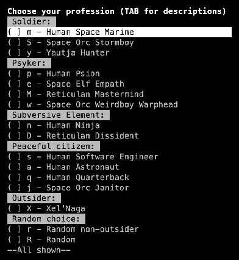
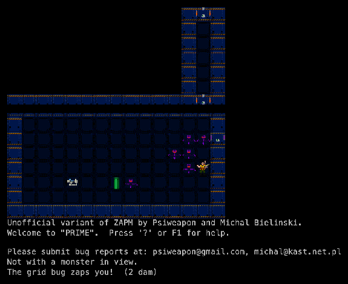
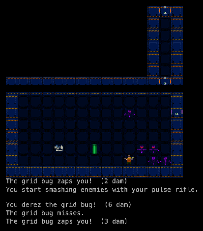
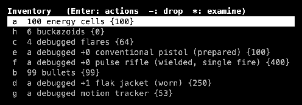

PRIME grew out of ZAPM after Cyrus Dolph stopped work on it in 2010. Psiweapon started it in March 2011; Michał Bieliński (who also ported BOSS to the PC) joined in October 2011, and they worked on it until the end of 2014. It kept ZAPM’s goal and jokes and added races, many more professions and monsters, and a graphical NotEye frontend with tiles. See the family tree.
Played here: PRIME 2.5a from Larzid/PRIME, with the NotEye tile sheet.
Credits
Psiweapon
Creator (2011–2014)
Michał Bieliński
Co-developer (2011–2014)
Cyrus Dolph
ZAPM, the base
Larzid
GitHub maintainer
Screenshots

Start: 14 professions in five groups, from Human Space Marine to the Xel’Naga.

First steps: a Space Marine on Space Base 1, meeting a pack of grid bugs.

A fight: “You derez the grid bug! (6 dam)”.

Inventory: energy cells, buckazoids, flares, a pistol, a pulse rifle, bullets, a flak jacket, a motion tracker.
Trivia
The Space Marine starts with a profane letter home about the “krab patties” that killed Johnny, and signs off “So long, bastards.” Every profession has its own introduction. (data/intro)
Daleks can levitate and follow you up and down stairs. (changelog, 2.5)
“Guardbot has something against ninjas.” (changelog, 2.5)
The monster list mixes in StarCraft (zergling, hydralisk, zealot, high templar), Star Control (Orz, Melnorme, Ur-Quan Kohr-Ah), Fallout (Brotherhood paladin, securitron), Dune (reverend mother) and System Shock (Shodan). (Monsters.txt)
You pick a key map at first start: ADOM, Angband, Dungeon Crawl, DoomRL, NetHack or PRIME’s own.
What's unique
Races and professions: humans, space orcs, space elves, Reticulans, a Yautja hunter and the Xel’Naga.
Psionics: four psyker professions with their own mutant powers.
Tiles: a graphical NotEye mode, with the ASCII game still underneath.
Everything ZAPM had: technology instead of magic, buggy/debugged/optimized items, implants, skills, the Orgasmatron.
Code dive
C++, about 55,600 lines. Monsters and items live in text tables (Monsters.txt, Items.txt) turned into C++ by m4 and a table compiler (tablemk, bison/flex).
Two frontends: NCurses and NotEye (Zeno Rogue’s graphics library).
A crash handler (libsigsegv) tries to save the game on a segfault and logs “Saving throw succeeded!”
This port: a new frontend in place of NotEye with the same tiles, WebAssembly, separate windows. Source: memmaker/prime.
PRIME has a debug command for the “Bastard Operator From Hell” (create items and monsters, control monsters), but only with four command-line options; this port does not enable it. Export save / Import save keeps backups.